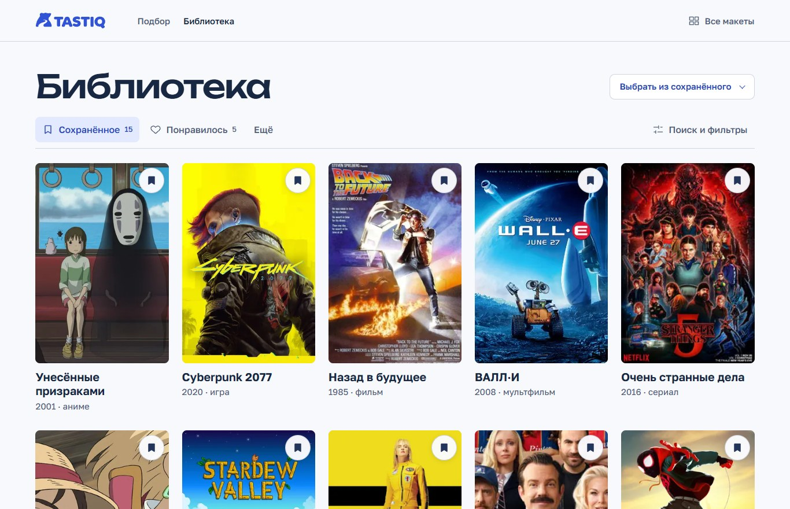
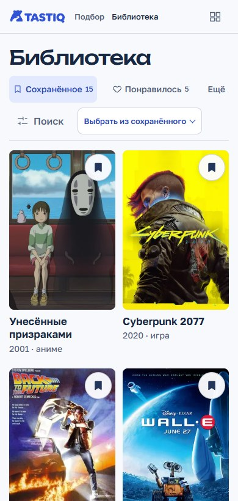
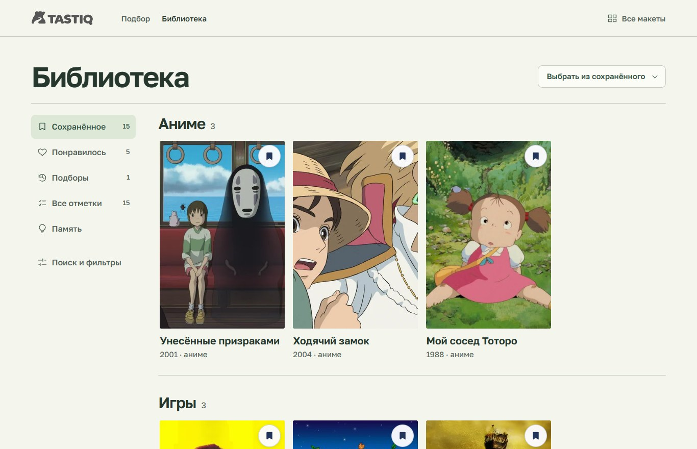
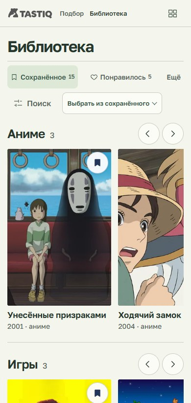
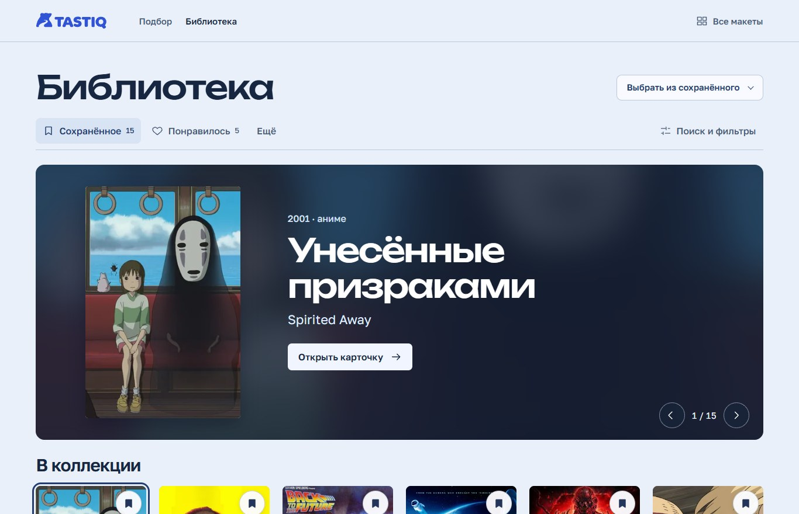
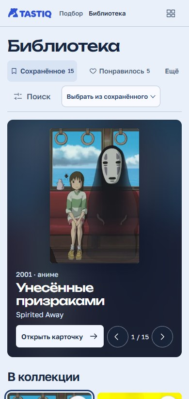
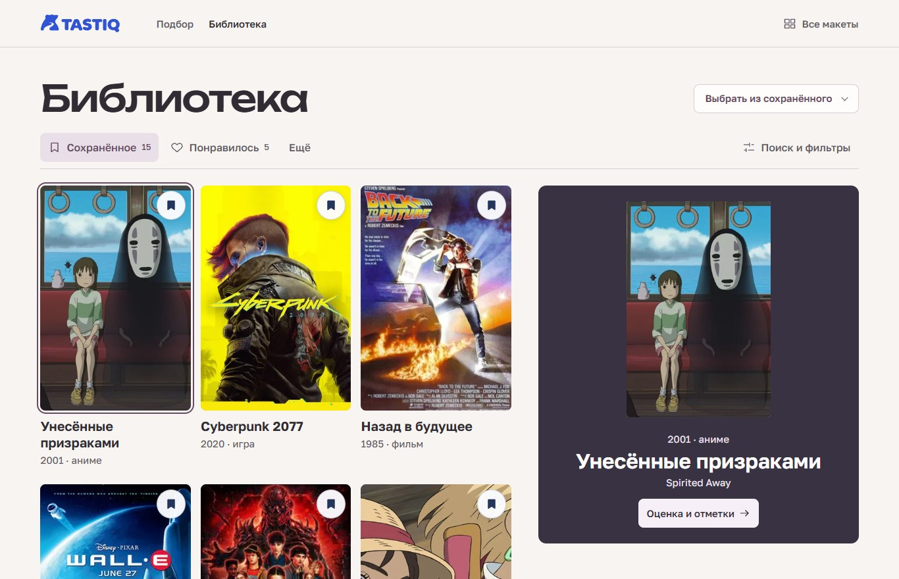
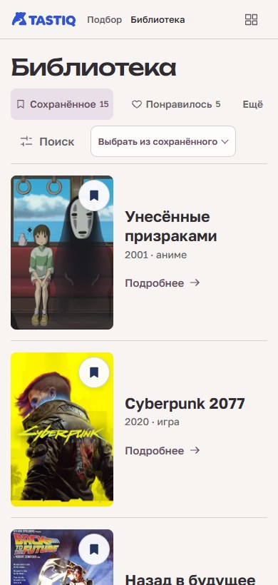

ImpeccableСтена обложекВсе сохранения перед глазами. Ищи по знакомому постеру, открывай работу нажатием на обложку.Открыть стену обложек
UI/UX Pro MaxПолки по разделамАниме, игры, фильмы, сериалы и мультфильмы стоят отдельно. На телефоне каждую полку можно листать вбок.Открыть полки
Frontend DesignКрупный планОдно произведение занимает сцену. Листай стрелками или выбери другую обложку в коллекции ниже.Открыть крупный план
По референсам FigmaКаталог с карточкойНа компьютере выбранная работа остаётся справа при просмотре коллекции. На телефоне у каждой работы своя строка с крупной обложкой и названием.Открыть каталог